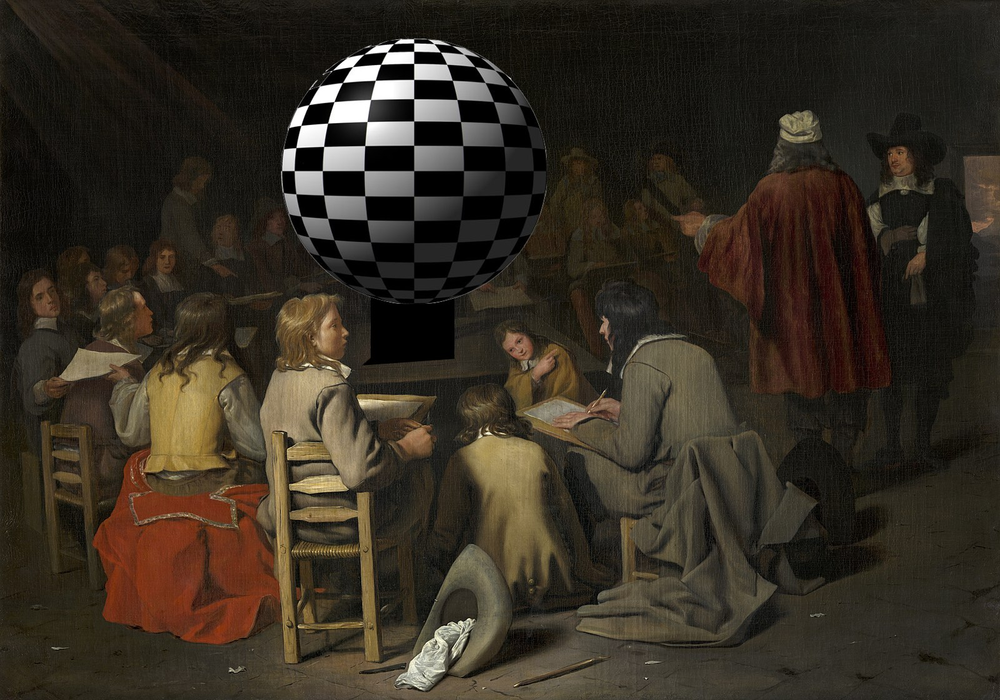

Check, Please
I. Bookworm
This man comes in every couple months to buy another book I don’t care about and talks at me about them. He tells me he likes the bow in my hair and asks if I’m into the beat poets. I shrug. He tells me I’m so quiet, he likes that. He tells me I always seem to be thinking. I wonder if he realizes that he is a faggot. He says something and I nod or whatever. I sweep this particular volume of Jack Kerouac across the laser scanner and dump it into a plastic bag in one smooth motion. He says he hopes I’m here again next time. Fuckin cracker.
Between customers I use a stack of post-it notes behind the counter to draw a flipbook of a fire going out. This depresses me. I write a short poem that will go nowhere. This depresses me. I am wearing a fitted cardigan, a blouse with a peter pan collar, a pencil skirt. I’ve gone all out with the girl drag thing. ‘60s secretary style. Librarian style. It seems to especially attract the men who hover by the Criterion Collection wall in the media department. When I’m on my break I buy a big coffee and a slice of microwave quiche at the café end of the store with my employee discount. When I have a few minutes, I browse the Criterion Collection DVDs.
I wonder if these film buffs who brazenly hit on me at the checkout counter feel just as pretentious as I do about our taste in films. I wonder if they’ve watched Stroszek or The Enigma of Kaspar Hauser, I wonder if they’re fans of Herzog’s more recent work because I am decidedly not. I wonder if they’re into John Cassavetes or Pedro Almodóvar. I wonder if they wonder the same about me.
I don’t talk about films. It depresses me.
Here’s what happens. I go home. I give away the carefully curated wardrobe of whatever sad excuse for a girl I thought I was supposed to be. I leave home. I start injecting testosterone. I grow patchy peach fuzz above my lip and start talking about gay supremacy and espousing hostile, anarchist critiques of gender. I start using different pronouns like it even matters and say I’m not a man I’m a goddamn faggot because that actually does. These faggots at the bookstore stop feeling comfortable bothering me. I get fired.
Somewhere in there I am houseless. Somewhere in there I am raped. Somewhere in there a friend kills herself.
Time heals nothing. It wakes you up for work is what it does.
My father and I don’t speak anymore but he is a Maoist. He never told me this but he doesn’t tell me much at all—not about my mother’s shoulder surgery, not about being demoted at work, not about his mounting credit card debt. I never tell him what to call me or what trans means. I go home for free food and we assess each other with a cool acceptance the way you accept that the sky is probably blue.
I go home for free food. My father watches me wolf down rice with 된장찌개 so hot it scalds my tongue. He smokes a cigarette as he studies my face. He sips 매실주 in the dim light as he watches me rinse the dishes and put them away, watches my movements. I’m not a daughter anymore.
Before I go, he gives me a palm-sized booklet of stamps depicting Mao Zedong. He’s drunk. He also gives me a matching lapel pin.
I leave home. Outside my building I find twenties tucked between portraits of the chairman. I cry in my car and we never call each other again.

II. Catwalk
I slip off the terrycloth robe they gave me and sit on the platform in the center of the class. I try a new pose this time. I stretch one leg toward the edge of the platform and bend the other close to my chest. They’re all staring at my cunt. I know that’s what they wanted to see. I listen to the scribble of charcoal on paper. Most of the students are older people with empty nest syndrome who come to these lessons as a hobby. A real informal affair. The last time I did this, some old lady with coke bottle glasses told me she thought my tattoos made a very interesting subject. They’ve apparently never seen anybody like me. They’ve never seen a body like mine.
An egg timer goes off every five minutes. Today it’s all about gesture drawing, so the teacher wants them to be quick about it. My joints start aching if I have to hold a pose for much longer, so I’m glad for that.
I catch my reflection as I get dressed in the bathroom. Sometimes I can’t believe I have tits. Big hairy fuckin tits.
Do you ever just take a good look at yourself. What’s all that doing there.
The teacher’s a nice guy. Real vanilla. One of those dudes who wears ill-fitting button downs in non-threatening pastels, but untucked. Khaki shorts. Exquisitely uninteresting. He offers to show me everybody’s work and I don’t care but I haven’t been paid yet.
Drawing after drawing I can’t help but stare at my own cunt. I mean Jesus. One woman just went and put a big black scribble between my legs. One dude drew my clit the size of my fist.
To be fair, they’re all exceedingly untalented.
The teacher counts out sixty bucks and I tuck it into my pocket. He says he’ll call next time they need me. He probably won’t. I can tell by the way he hands me my cash, my clothes, my robe. Everything about the way he occupies the space around my body says he doesn’t even want to brush up against me, breathe the same air.
As I head out, a middle-aged man blocks my way. ‘I just wanted to say, I really appreciate you doing this,’ he tells me. ‘You have a very unique shape. It’s refreshing.’
Fuckin cracker.
My father used to say to me, ‘You can always make more money.’ He said this the last time I went to the mental hospital. I came out with a fat medical bill that he refused to show me. I never found out whether it got sent to collections or not.
‘You can always make more money,’ he said, and I knew what he really meant. You’ll always have to make more money. And then you die. So why not die generous and kind.
I think about my father silently sliding this little booklet of Maoist propaganda over to me across the kitchen table with a gentle fear and the kindness it takes to slaughter landlords en masse.
I keep the booklet and lapel pin in a small box somewhere. Somewhere. It’s weird how you can lose anything in such a small space.
III. 노래방
The sun’s already setting when I wake up. My roommate Fig is at the doorway. ‘You okay dude?’ they say. ‘Your alarm’s been going off for literally a half hour.’
I shut it off and roll over to the side of the bed.
‘Yo will you do my T shot, my hands are tore the fuck up,’ I say. Fig laughs and sits next to me. They drag my little kit out of the milk crate I use as a side table. I slip off my pants and toss it in the general direction of the hamper. Fig is holding the syringe up to the light when they catch a glimpse of my hands.
‘Jesus,’ they say. ‘You need to quit that job.’
‘No air bubbles. Hurt like a bitch last time.’
There is a beautiful woman at the doorway of the kitchen. I’ve got wings in the deep fryer and she is leaning against the doorjamb with one of her ankles crumpled under her, her stiletto heels slipping out of place. She’s wandered from her fourteen-person party and I don’t know what she’s doing here. She is exceptionally drunk even for this place.
The chef’s out. The manager went on break and hasn’t been back. Judging by the state of her room the last time I bussed their glasses, I’m not getting out of here until at least 6am.
‘Can I get some more fries,’ she says. I am not sure how to respond.
‘I actually need you to order from your room,’ I say. ‘I can send a server over.’ The owner’s daughter is missing so I would probably be limping out momentarily to take this woman’s order anyway but I’m trying to get her out of my kitchen. I lift the mesh basket out of the fryer and jostle it some to drain the oil before tossing the wings into a metal bowl full of barbecue sauce. I am careful not to splash hot oil in her direction.
‘Okay,’ she says. She starts laughing. ‘Where’s the bathroom?’
I point at the door directly behind her. ‘Right there.’
A man from her party walks up with an obnoxious swagger. He says something terse to her in Vietnamese. She laughs and says something back. He looks pissed.
As the woman peels herself away from the doorjamb, I worry she will fall down. I worry about a lot of things.
The bartender stops by to drop off another basket for me to wash. I dunk it in the sanitizer and scrub it quick, dunk it in the hot water and toss it on the drying rack. He makes a face about it and I assure him I’m more thorough when I’m cooking for staff. I’m not. I wipe my hands on my apron and drop some fries in the oil. He tells me he needs a barback when I’m free.
‘Man, I’m slammed,’ I say. ‘You see all these tickets?’
‘These fuckin animals,’ he says. ‘Ching chong bing bong, me so hungry.’
The sizzle and pop of oil drowns out his laughter.
‘Add another thing of fries on room three’s tab,’ I say. Fuckin cracker.
It’s past close. The beautiful woman who was standing in my doorway earlier is puking in the bathroom and it takes her friends a long time to find her. The guy that came to collect her earlier paces around in a huff while I get my dishes done, he passes my doorway twice. The place doesn’t clear out until 4:45am.
I take a broom, dustpan, and a bucket full of cleaning supplies to room three.
The broken glass glistens like jewels in the pink and purple light. It crunches like packed snow beneath my non-slip clogs. The puddles of spilled booze look like icy lakes.
I flip on the regular lights and get to work, stacking the biggest shards of glass in the flat of my hand and dumping them in the emptied bucket. It’s a miracle I haven’t caught hepatitis or some shit yet. I sweep the floor. I scrub some crusty shit off the vinyl booth and the walls. I unplug everything and Windex the TV screens. Etcetera etcetera etcetera.
This is my favorite part of the job besides getting paid. Nobody bothers me and the pretense of a good time is lifted. No more pink strobes, no more midi tracks playing stripped down K-pop and TOP 40 hits on a loop. No more laughter. The harsh white fluorescents make everything look soiled and indecent. I prefer the honesty.
At the end of my shift the owner herds me into one of the rooms and closes the door. He licks his thumb and counts out eighty dollars. He makes a big show of it like he’s paying me more than everybody and I’m not supposed to tell. It feels like good money if you don’t do the math—I just worked twelve hours straight. Fifteen-minute break to smoke a cigarette and scarf down a banana.
People keep saying time isn’t linear but isn’t it. Wasn’t it constructed to be. The more accurate thing to say would be time is fluid—it works however the ruling class wants it to work and it’s illusory when they decide it is. There is a distinct difference between imagination and illusion. One is a painting of a mirage and the other is the mirage. This is the quantum physics of the petite bourgeoisie. The pseudo-intellectual academic’s version of that ‘We’re all family here! Please don’t form a union!’ type of shit.
So what is time. Where does time live.
The owner’s daughter makes hourly and signs a timesheet to clock her hours between eight to twelve. There’s linear time right there.
My manager makes salary and doesn’t sign a timesheet. He shows up wearing flip flops so we all know he’s above kitchen work with the MBA to prove it and spends most of his time reminding me the toilet’s clogged between smoke breaks and giving out free cocktails to the prettier clientele. Where’s time then.
Every night I do their jobs and then some. I walk through rooms to bus glasses, take orders, and deliver food while the two of them do key bumps in the parking lot.
I don’t sign a timesheet. I also never see a dime from the tip jar. Where’s time then.
We will toil until the end of time. I mean that in the most literal sense. To end work is to end time. To end time is to free Earth, to free gravity, to free the sun from the orbit of our oppressive taxonomy.
I don’t get home until 7am. My hair feels thick with grease, my face is puffy from fatigue. My clothes reek of whiskey and mildew. I throw myself on the bare mattress on my floor. I set my alarm for 3pm and send Fig a text asking for help with my T shot again with a picture of my hand. They immediately text back from their coffee shop job, ‘jfc that’s fucking grody!’ and then, ‘ofc i’ll do it tho. love u angel.’
I gaze into the pink light of early morning. I listen to the birds chirping outside. I wonder if the sun has thoughts. I mean, it’s the sun, y’know? Whatever. I grab a box of band-aids off the floor to dress my cuts, some of them all white and bloated open from soaking in dishwater.
I don’t even feel them anymore.
I tend to them like there won’t be new ones by tomorrow.
sung is a writer and interdisciplinary artist from Korea. They are the author of What About the Rest of Your Life (Perfect Day Publishing 2017). Their work has appeared in Nat. Brut, Kweli Journal, Contrary, The James Franco Review, The Wanderer, and Crab Fat Magazine.